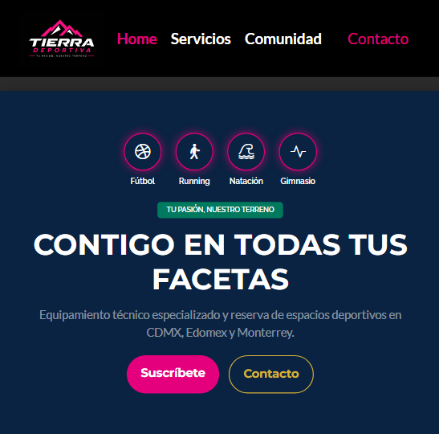
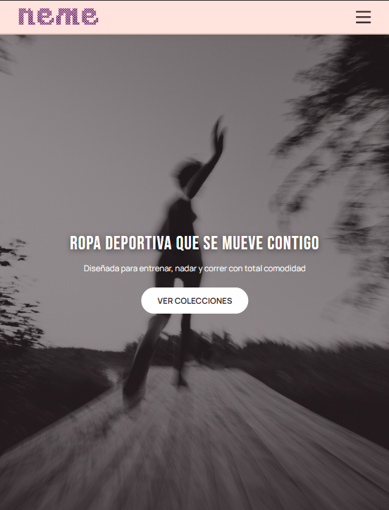
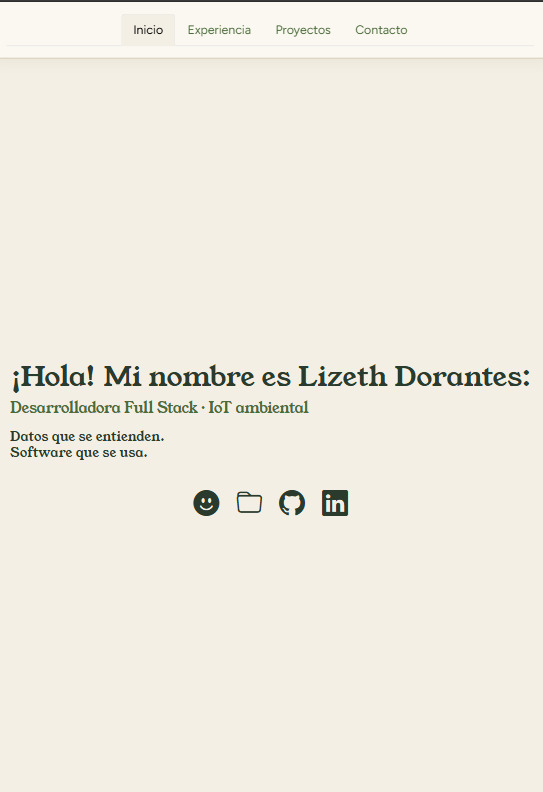
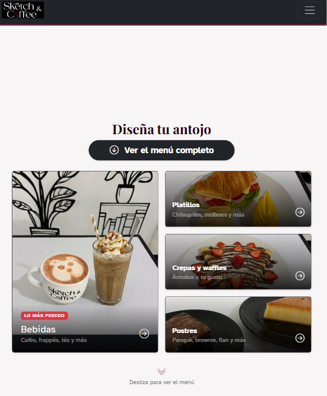
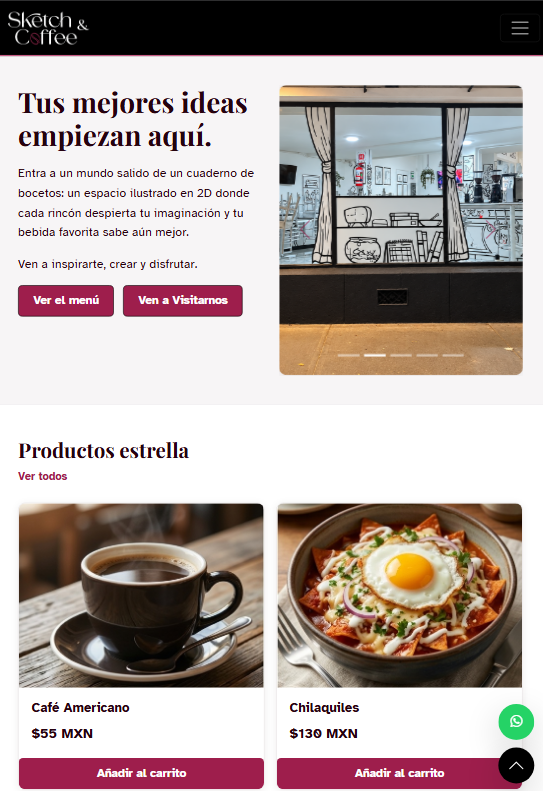

Hackathon
Tierra Deportiva
Landing page interactiva de productos deportivos mexicanos creada en equipo.
Un recorrido por lo que he construido.

Landing page interactiva de productos deportivos mexicanos creada en equipo.

Landing page de ropa deportiva enfocada en la comodidad para disfrutar el movimiento. Concepto, identidad visual y desarrollo en una semana.

Sitio personal construido desde cero con enfoque en accesibilidad y UX.

Landing page independiente para el menú de la cafetería, con datos dinámicos para que el negocio pueda actualizar productos sin tocar código.

Tienda en línea para una cafetería con identidad 2D. Frontend funcional con validaciones probadas en Jest, backend en desarrollo con Spring Boot. Coordiné al equipo rotando entre Scrum Master y Product Owner durante 8 semanas.